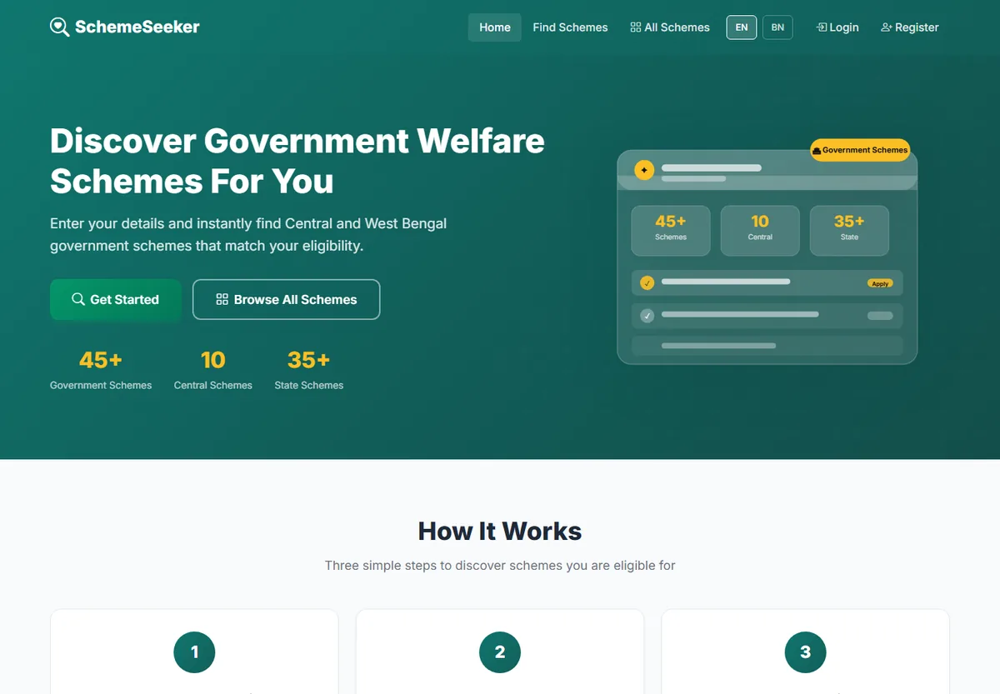

SchemeSeeker
A bilingual eligibility finder for 45+ Central and West Bengal government schemes.
- Problem
- Scheme details are spread across departments, and citizens have to work out eligibility manually. The goal was a single place to search, filter, and save relevant schemes.
- What I built
- A Node.js and MySQL app with an eligibility form, category browsing, saved schemes, user accounts, and an admin dashboard for managing scheme data.
- Key decision
- Server-rendered views with Express and MySQL, plus bcrypt-hashed passwords and session-based auth, kept the stack small and deployable.
Live demo: the hosted API is being restored; the repository includes the full implementation.